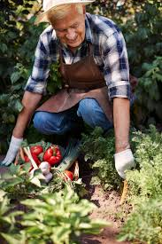

Marta Ferrándiz
Especialista en innovación aplicada a maquinaria agrícola.
Profesionales invitados para compartir conocimiento sobre agricultura, maquinaria, oficios tradicionales y patrimonio medieval.
Especialista en innovación aplicada a maquinaria agrícola.

Maestro artesano dedicado a la recuperación de oficios tradicionales.
Historiadora especializada en ferias medievales valencianas.

Agricultor ecológico y divulgador de técnicas sostenibles.

Consultora en producto local y economía de proximidad.

Investigador sobre patrimonio rural y memoria agrícola.